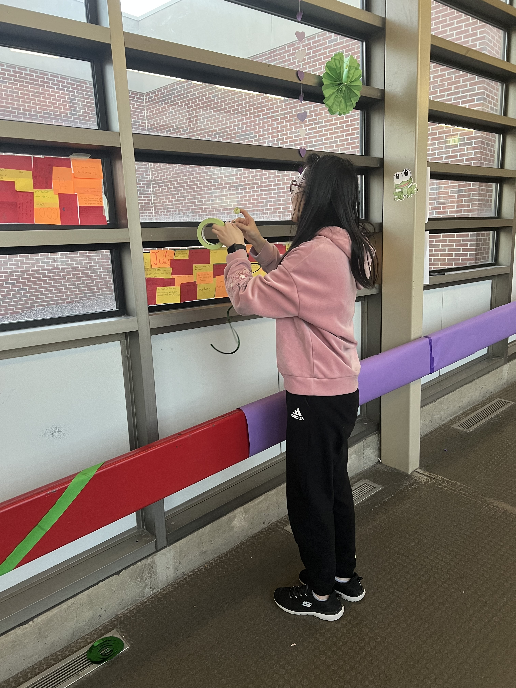
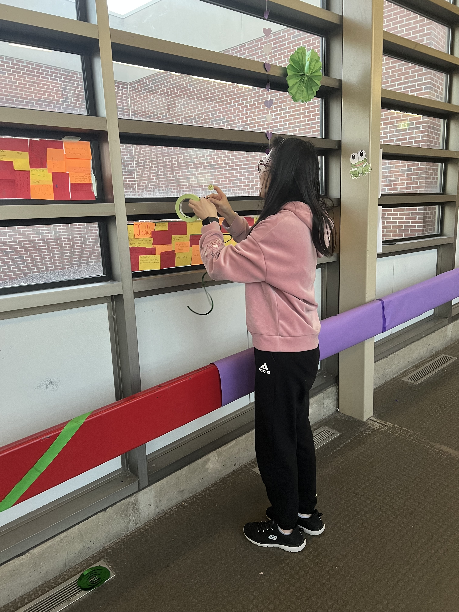

Clubs
I actively participated in several academic and leadership-based organizations that helped me grow intellectually,
socially and professionally. My involvement in these clubs reflects my commitment to excellence, curiosity and community.
NHS
National Honor Society
FBLA
Future Business Leaders of America
NCHS
National Chinese Honor Society
NSB
National Science Bowl
NHS - National Honor Society
Recoginzed for academic excellence, leadership, service, and character. I contributed to community service projects and mentored
underclassmen while upholding the core values of NHS.
FBLA - Future Business Leaders of America
Explored business principles and participated in competitive events that strengthened my leadership and communication skills.
NSB - FNational Science Bowl
As a memeber of competitive Science Bowl team, I collaborated on fast-paced academic challenges covering physics, chemistry, biology, math,
and earth science. I sharpened my teamwork and critical thinking under pressure.
NCHS - National Chinese Honor Society
Celebrated academic achievement in Chinese language studies and promoted cultural aapreciation. I engaged in school-wide events to promote Chinese
culture and assisted fellow students in language learning.
Match Club
I enjoyed solving complex math probelms, collaborating with peers who shared a love for logical thking. The club fueled my passion for
problem-solving and analytical reasoning.

 
